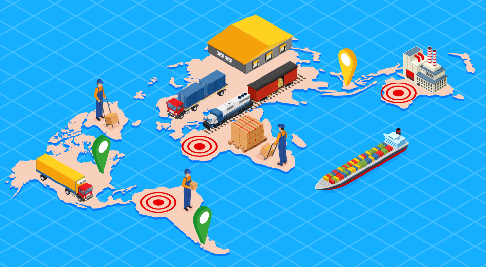
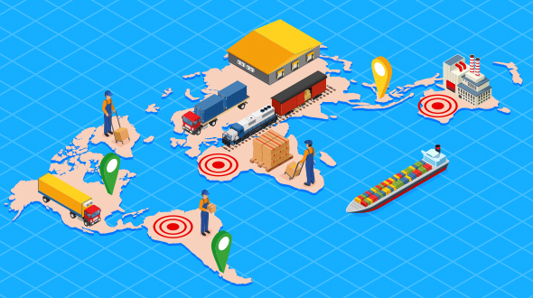

와 제 롤모델이 잡스에요!!! 아이폰 첫 출시되고 나서부터 계속 아이폰 쓰고 있는데 잡스가 너무 그리워요ㅠㅠ 지금은 돈만 벌려고 하는 것 같아서 디자인 발전도 없고ㅠㅠ와 제 롤모델이 잡스에요!!! 아이폰 첫 출시되고 나서부터 계속 아이폰 쓰고 있는데 잡스가 너무 그리워요ㅠㅠ 지금은 돈만 벌려고 하는 것 같아서 디자인 발전도 없고ㅠㅠ와 제 롤모델이 잡스에요!!! 아이폰 첫 출시되고 나서부터 계속 아이폰 쓰고 있는데 잡스가 너무 그리워요ㅠㅠ 지금은 돈만 벌려고 하는 것 같아서 디자인 발전도 없고ㅠㅠ와 제 롤모델이 잡스에요!!! 아이폰 첫 출시되고 나서부터 계속 아이폰 쓰고 있는데 잡스가 너무 그리워요ㅠㅠ 지금은 돈만 벌려고 하는 것 같아서 디자인 발전도 없고ㅠㅠ와 제 롤모델이 잡스에요!!! 아이폰 첫 출시되고 나서부터 계속 아이폰 쓰고 있는데 잡스가 너무 그리워요ㅠㅠ 지금은 돈만 벌려고 하는 것 같아서 디자인 발전도 없고ㅠㅠ
Market Report
The narrowing divide
Market Report
The narrowing divide
Peter Tirschwell,
executive director of content for Maritime &
Trade at IHS Markit
Peter Tirschwell,
executive director of content for
Maritime & Trade at IHS Markit
During the last few decades, the boundaries of the international shipping industry were largely set in stone: Container lines limited their role to moving goods on their ships, wholesaling vessel space to logistics firms, and retailing it to large shippers. That left logistics firms to perform most of the value-adding services along the journey, whether purchase order management, origin consolidation, visibility, customs clearance, or trucking and warehousing post the ocean leg.
To the degree carriers had aspirations to be in the logistics business, they have largely been disabused of the value, selling forwarding businesses they created or segregating them within the corporate family. There were too many perceived conflicts to being both a carrier and a forwarder, and so what some might see as an obvious synergy of controlling the asset and the services around it never materialized in any meaningful way.
This has continued into the present day. When the three Japanese carriers merged into the Ocean Network Express (ONE) on April 1, Yusen Logistics, as part of the NYK Group, became just a unit owned by one of the ONE owners, thus becoming an even more distant corporate relative.
That came after the Singapore-owned NOL Group in 2015 sold APL Logistics to Japan’s Kintetsu World Express. Damco, the Maersk logistics business, had struggled to become profitable to the point that many believed it was being nursed back to health with the objective of putting it on the block. The rebranding of Maersk Logistics as Damco and the relocation of the Damco headquarters to The Hague from Copenhagen, part of the former Maersk strategy to run its carrier, logistics provider, and terminal operator as largely independent businesses, still was an example of the lengths to which carriers would go to separate shipping from logistics in the minds of customers.
Even within the realm of traditional container shipping, carriers have been withdrawing from providing inland services; they seem more content providing port-to-port transits, seeing inland costs, particularly empty repositioning, as exceedingly difficult to recoup from shippers or to offset with opportunistic cargoes.


Maersk’s move
Into this arena has come two developments that challenge the assumptions around the longstanding carrier/forwarder divide. In January, Maersk, the No. 1 global container carrier, declared its strategy to become the “global integrator of container logistics,” akin to a FedEx or UPS for ocean freight, within three to five years. An “integrated” carrier is defined as one that controls the shipment from end to end.
On April 20, the No. 3 container carrier CMA CGM announced plans to acquire 25 percent of CEVA Logistics, with its CEO Rodolphe Saade saying that logistics is “closely related to the shipping industry,” and that the affiliation would allow for the integration of “services beyond maritime transport.” This came after CMA CGM announced plans to develop and operate a cold storage facility at London Gateway specifically not under a separate logistics brand.
Perhaps unsurprisingly, some forwarders have seen these developments as carriers trying to put them out of business. It is an age-old fear of forwarders since it’s the carriers who control the ships and without the ships the forwarder can’t be in business. One longtime forwarder said he saw an effort by Maersk as a “drive to put freight forwarders and non-vessel-operating common carriers (NVOCCs) out of business,” citing digital channels that carriers are creating that will allow for direct booking with carriers.
While it is true that carriers see a new opportunity to pursue the small customer market through digital channels, the idea that a wholesale reordering of the industry is under way is a stretch. Carriers have not yet discovered the formula for financial success, and the search will continue until a viable model is found. In light of that, it seems absurd to suggest that large carriers are trying to kill off the source of half their cargo.
Maersk made this point by including Otto Schacht, Kuehne + Nagel executive vice president for sea logistics, on the agenda of its Capital Markets Day on Feb. 20 when it presented its integrated carrier vision.
The more likely scenario is that carriers, forwarders, and platforms such as Alibaba, JD.com, and Amazon will compete alongside each other, offering a diversity of shipping products to a market that is itself highly diversified in terms of the size, priorities, and buying preferences of different customer segments.
Within digital channels, carriers and forwarders will end up cross-selling each other’s products on various platforms and websites while increasingly competing with the platforms. Such a scenario will inevitably lead to more transparency, where all parties in the chain must focus on value creation for the customer and will have to justify what they do to help their customers.
DB Schenker CEO Jochen Thewes in his TPM keynote speech in March alluded to the new complexity in the market: “Today we look at everybody who is out there and say to ourselves, what is the customer really looking for, what is the next big thing for the customer, and what capability do I have, and who do I need to partner with no matter who that is in order to get that capability and bring it to the market and bring it to the market fast.
“It’s a completely different view that we have today in our environment in terms of how we go about our business.”
-
Great
322
-
Like
322
-
Sad
322
-
So-so
322
-
Angry
322